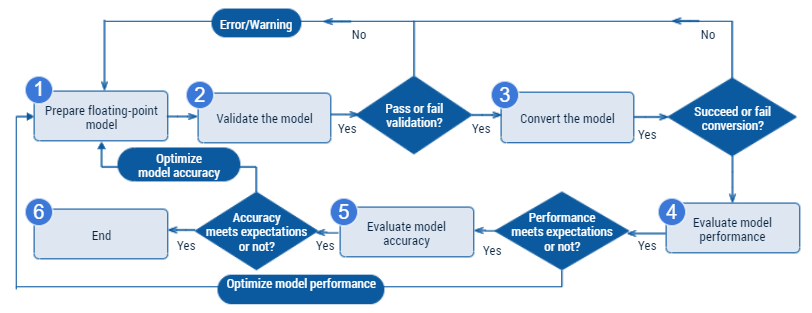
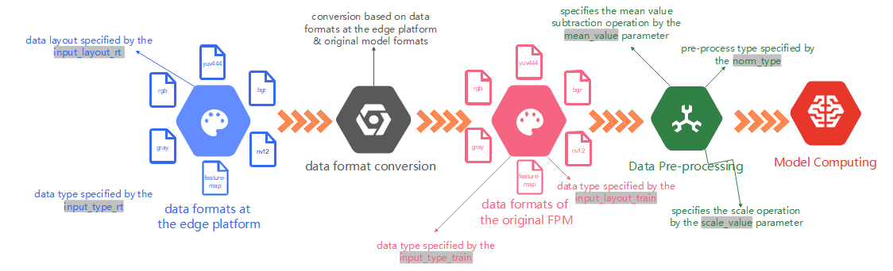
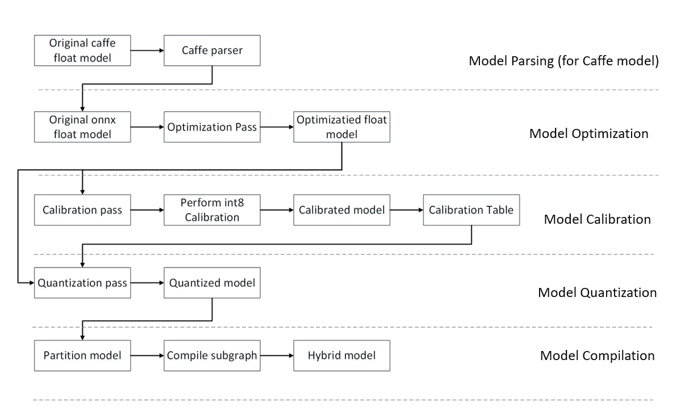
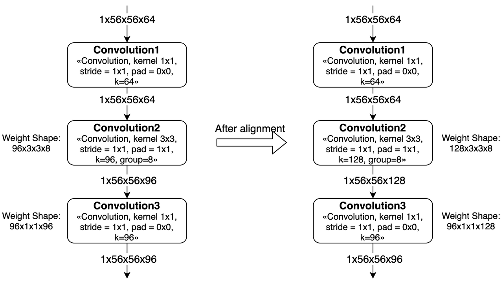
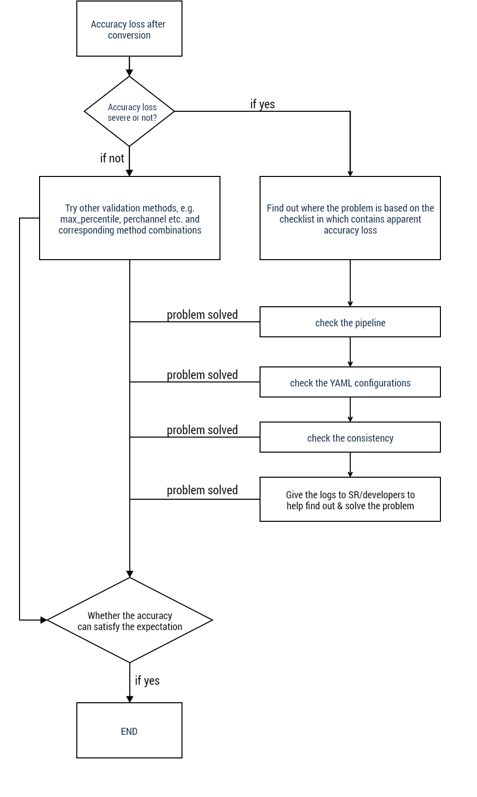

3. Model Conversion
3.1. General Descriptions
Model Conversion refers to the very process of converting the original FPM 1 into the Horizon’s HGM 2. The original FPM (also referred to the FPM) refers to the models users trained from some open source deep learning frameworks e.g. TensorFlow/PyTorch etc. with float32 computing accuracy; while the HGM refers to a specific model format for Horizon’s ASIC 3 runtime. Please be very clear of the terms FPM and HGM, as they appear multiple times in this chapter.
The complete model development process is composed by 5 major stages: FPM Preparations, Model Validation, Model Conversion, Performance Evaluation and Accuracy Evaluation, as shown in below diagram:
The FPM, as the output of the FPM Preparations stage, will serve as the input of the model conversion tool. THe FPM is usually trained based on some open source deep learning frameworks. Note that the model must be exported into Horizon supported formats. More information please refer to the FPM Preparations section.
The Model Validation stage is used for ensuring that the model can satisfy the toolchain’s requirements. To enable users to adjust the unsupported model with the help of Horizon’s OP restrictions, Horizon provides such tool to accomplish model validation, with which users can point out the details of the unsupported OPs. More information please refer to the Check The Model section.
The Model Conversion stage converts the FPM into Horizon supported HGM. To run models efficiently, Horizon’s model conversion tool deals with the key stages i.e. optimization, quantization and compilation of models. Horizon’s model quantization method has been through long-term technological and production validations and can maintain over 99% accuracy for the majority of classic deep learning models. More details about model conversion please refer to the Model Conversion section.
The Performance Evaluation stage contains a series of model performance evaluation tools. Before deploying your application, users can validate whether model performance satisfy application requirements using these tools. When model performance fails the expectation, users can optimize their models based on Horizon’s model optimization advices. More information please refer to the Model Performance Analysis And Optimization section.
The Accuracy Evaluation stage contains a series of model accuracy evaluation tools. In most cases, Horizon’s toolchain converted models can maintain almost the same accuracy as the original FPM, therefore, users can validate model accuracy before deploying the application using the tools. More information about evaluation please refer to the Model Accuracy Analysis and Optimization section.
Attention
Usually you can get qualified runtime model after model conversion, but to ensure that the performance and accuracy of the model can satisfy the requirements of your application, Horizon strongly recommend you to launch the performance and accuracy evaluations after each conversion.
3.2. FPM Preparations
The open source deep learning frameworks trained FPMs are input of the model conversion tool. Currently the conversion tool can support the following deep learning frameworks:
FRAMEWORK |
Caffe |
PyTorch |
TensorFlow |
MXNet |
OTHERS |
|---|---|---|---|---|---|
HORIZON’S TOOLCHAIN |
supported |
supported (convert into ONNX) |
contact Horizon |
||
As shown above, the caffemodel exported from Caffe framework can be supported directly; While the models trained from PyTorch, TensorFlow and MXNet must be first converted into ONNX before using the conversion tool. Presently Horizon support ONNX opset10 and opset11.
There are standard solutions to convert models of different frameworks into ONNX, refer to below:
- 🔗 Pytorch2Onnx: PyTorch’s official API can support exporting models into ONNX models,
click here to see more: https://pytorch.org/tutorials/advanced/super_resolution_with_onnxruntime.html.
- 🔗 Tensorflow2Onnx: convert based on the onnx/tensorflow-onnx of the ONNX community,
click here to see more: https://github.com/onnx/tensorflow-onnx.
- 🔗 MXNet2Onnx: MXNet’s official API can support exporting models into ONNX models,
click here to see more: https://github.com/dotnet/machinelearning/blob/master/test/Microsoft.ML.Tests/OnnxConversionTest.cs.
- 🔗 More solutions to convert models of other frameworks into ONNX please click here:
https://github.com/onnx/tutorials#converting-to-onnx-format.
3.3. Check The Model
To ensure that the model can run on Horizon’s platform efficiently, all OPs in the model must comply with Horizon’s
OP restrictions. The OP Restriction section explains the details of Horizon’s supported OPs,
in which specific parameter restrictions are offered for each OP. Please refer to the:
supported_op_list_and_restrictions_release excel table in the
horizon_xj3_open_explorer_${version}_${date}/ddk/doc/navigation/ai_toolchain/docs_cn/supported_op_list_and_restrictions/
directory. Because there are a large amount of OPs supported by Horizon, we provide the hb_mapper checker tool to
check details of each OP and to save users’ trouble of verifying each OP manually.
3.3.1. Use The hb_mapper checker Command To Check Your Model
hb_mapper checker --model-type ${model_type} \ --march ${march} \ --proto ${proto} \ --model ${caffe_model/onnx_model} \ --input-shape ${input_node} ${input_shape} \ --output ${output}
- hb_mapper checker：
- --model-type
This parameter is used for specifying the input model type. Presently it can support Caffe or ONNX model input.
- --march
This parameter is used for specifying the matched AI ASIC type. It should be specified as
bernoulli2for the X/J3 ASICs.- --proto
This parameter is used for specifying the prototxt filename of Caffe model. It is only valid when the
model-typeis specified ascaffe.- --model
This parameter is used for specifying your FPM name. In other words, when the
model-typeis specified ascaffe, it should be specified as the caffemodel filename; while when themodel-typeis specified asonnx, it should be specified as the ONNX model name.- --input-shape
This is an optional parameter to specify the input shape of the FPM. It should be written as:
{input_name} {NxHxWxC/NxCxHxW}, where theinput_nameand the shape must be separated by space. For instance, let theinput_nameasdata1and input shape as[1,224,224,3], it should be written as:--input_shape data1 1x224x224x3. Note that your model shape is subject to the value here when it is different from that of the actual model shape.Note
Note that the
--input-shapecan contain only one name and shape combination. In other words, users will need to configure it multiple times when there are multiple input nodes.- --output
This is an optional parameter to specify the log filename. The
hb_mapper checkerresults will be dumped into your specified log file when this parameter is specified.
3.3.2. Exception Handling
When the FPM fails the check, the hb_mapper checker tool will dump Error message.
a file named hb_mapper_checker.log will be generated in current directory to provide error details.
In below example, the configuration file contains an unrecognizable OP whose type is Accuracy:
layer {
name: "data"
type: "Input"
top: "data"
input_param { shape: { dim: 1 dim: 3 dim: 224 dim: 224 } }
}
layer {
name: "Convolution1"
type: "Convolution"
bottom: "data"
top: "Convolution1"
convolution_param {
num_output: 128
bias_term: false
pad: 0
kernel_size: 1
group: 1
stride: 1
weight_filler {
type: "msra"
}
}
}
layer {
name: "accuracy"
type: "Accuracy"
bottom: "Convolution3"
top: "accuracy"
include {
phase: TEST
}
}
Run hb_mapper checker to check this model and you will see below in the hb_mapper_checker.log file:
ValueError: Not support layer name=accuracy type=Accuracy
3.3.3. Interpret Model Check Results
If there isn’t error message, then the model check is passed and the hb_mapper checker tool will
dump the following results:
==============================================
Node ON Subgraph Type
----------------------------------------------
conv1 BPU id(0) HzSQuantizedConv
conv2_1/dw BPU id(0) HzSQuantizedConv
conv2_1/sep BPU id(0) HzSQuantizedConv
conv2_2/dw BPU id(0) HzSQuantizedConv
conv2_2/sep BPU id(0) HzSQuantizedConv
conv3_1/dw BPU id(0) HzSQuantizedConv
conv3_1/sep BPU id(0) HzSQuantizedConv
...
In the above code block, each line represents the model check result of a model node and consists of 4 rows: Node, ON, Subgraph and Type. Wherein, Node denotes node name, ON denotes the hardware to process node computing, Subgraph denotes the subgraph to which the node belongs and Type denotes the name of Horizon’s internal implementation that mapped the node. Horizon’s tool will divide those CPU computing OPs at the non-input and output part of the model into 2 Subgraphs at the BPU computing unit.
3.3.4. A Guide To Optimize The Check Results
Ideally, both the non-input and the output should run in BPU, i.e. there is only one subgraph.
If there are multiple subgraphs caused by CPU OPs, the hb_mapper checker tool will report
the cause of CPU OPs.
In below example, the Convolution2 of the Caffe model uses a 9x9 kernel which exceeds Convolution’s OP restrictions.
layer {
name: "data"
type: "Input"
top: "data"
input_param { shape: { dim: 1 dim: 3 dim: 224 dim: 224 } }
}
layer {
name: "Convolution1"
type: "Convolution"
bottom: "data"
top: "Convolution1"
convolution_param {
num_output: 128
bias_term: false
pad: 0
kernel_size: 1
group: 1
stride: 1
weight_filler {
type: "msra"
}
}
}
layer {
name: "Convolution2"
type: "Convolution"
bottom: "Convolution1"
top: "Convolution2"
convolution_param {
num_output: 128
bias_term: false
pad: 4
kernel_size: 9
group: 1
stride: 1
weight_filler {
type: "msra"
}
}
}
layer {
name: "Convolution3"
type: "Convolution"
bottom: "Convolution2"
top: "Convolution3"
convolution_param {
num_output: 128
bias_term: false
pad: 1
kernel_size: 3
group: 1
stride: 1
weight_filler {
type: "msra"
}
}
}
When checking this model using the hb_mapper checker, you’ll get below kernel shape out of range warning information:
1 Layer Convolution2
2 Expected data shape range of Kernel shape is [[1, 2048],[1, 7],[1, 7],[1, 2048]], but the data shape is [128,9,9,128]
And in model check results, you’ll find that there are more than 1 subgraphs, shown as below:
===============================================
Node ON Subgraph Type
-----------------------------------------------
Convolution1 BPU id(0) HzSQuantizedConv
Convolution2 CPU -- Conv
Convolution3 BPU id(1) HzSQuantizedConv
According to hb_mapper checker’s reminder,
users need to adjust the kernel shape of Convolution2 into restricted range when higher performance is required.
Tip
unless your model performance fails the expectations in the subsequent performance evaluations, users don’t need to move the CPU OP to BPU in line with the advice here, as multiple subgraphs won’t affect the conversion.
3.4. Convert The Model
The model conversion stage aims to convert the FPM into the Horizon Hybrid HGM. Through this stage, you will get a new model which can run in Horizon ASICs. Before converting the model, please be sure that your model has passed the model check as described in the Check The Model section.
Model conversion is executed by the hb_mapper makertbin tool,
in which contains some important procedures, such as: model optimization, calibration and quantization etc.,
calibration must prepare data in line with model pre-processing requirements.
To help better interpret model conversion, this section explains usage of conversion tool, calibration data preparation,
conversion internal procedure, conversion results parsing and conversion output chronologically.
3.4.1. Convert The Model Using The hb_mapper makertbin Tool
- how to use:
hb_mapper makertbin --config ${config_file} \ --model-type ${model_type}
- parameters：
- --model-type
This parameter is used for specifying the model type in conversion and presently it can be specified as
caffeoronnx.- --config
This parameter refers to the configuration file in compilation. It is in the YAML format and therefore has a .yaml suffix. A complete configuration file template is shown as below:
Note
Below configuration file is only for display, in an actual configuration file of a model, the
caffe_modelandonnx_modelparameters are not coexisting. The model should be either a Caffe or a ONNX model.# model parameters model_parameters: # The descriptive file of the original Caffe FPM prototxt: '***.prototxt' # The original Caffe model file caffe_model: '****.caffemodel' # The original ONNX model file onnx_model: '****.onnx' # The target AI ASIC architecture of conversion march: 'bernoulli2' # The prefix of the converted model file which will run in dev board output_model_file_prefix: 'mobilenetv1' # The directory to where the conversion results will be saved working_dir: './model_output_dir' # To specify whether or not to enable the converted HGM's capacity to dump the intermediate layer results layer_out_dump: False # To specify the levels of the conversion generated logs log_level: 'debug' # input information parameters input_parameters: # The input node name of the FPM input_name: "data" # The input data format of the original FPM (whose quantity/sequence should be the same with the input_name) input_type_train: 'bgr' # The input data layout of the FPM (whose quantity/sequence should be the same with the input_name) input_layout_train: 'NCHW' # The input data size of the FPM input_shape: '1x3x224x224' # the data batch_size to be passed into neural network when actually performing neural input_batch: 1 # The data pre-processing method to be added into the model norm_type: 'data_mean_and_scale' # The image subtracted mean values of pre-processing method; # values should be separated by space if channel mean is used mean_value: '103.94 116.78 123.68' # The image scale of pre-processing method, values must be separated by space scale_value: '0.017' # The input data format which the converted HGM needs to match # (whose quantity/sequence should be the same with the input_name) input_type_rt: 'yuv444_128' # Special input data format input_space_and_range: 'regular' # The input data layout which the converted HGM needs to match # (whose quantity/sequence should be the same with the input_name) # If input_type_rt is configured as nv12, then this parameter does not need to be configured input_layout_rt: 'NHWC' # Calibration parameters calibration_parameters: # The directory to where the calibration samples will be saved cal_data_dir: './calibration_data' # Turn on/off automatic image calibration sample processing (skimage read; resize to input node size) preprocess_on: False # Type of calibration algorithms calibration_type: 'kl' # max calibration parameter max_percentile: 1.0 # Enforce an OP to run in CPU run_on_cpu: {OP_name} # Enforce an OP to run in BPU run_on_bpu: {OP_name} # compilation parameters compiler_parameters: # Select compilation strategy compile_mode: 'latency' # Turn on/off the debug information in compilation debug: False # number of cores to run model core_num: 1 # Select the priority of model compilation optimize_level: 'O3' custom_op: # The calibration method of custom OP, the register method is recommended custom_op_method: register # The implementation file of custom OP, multiple files should be separated by ";" # This file can be generated by the template, please refer to the custom OP related docs for more information op_register_files: sample_custom.py # The folder in which keeps the custom OP implementation file, please use relative path custom_op_dir: ./custom_op
The parameters in the configuration file is composed by: model parameters, input information parameters, calibration parameters and compilation parameters. All 4 parameter sets must exist in your configuration file. Parameters can be divided into the required and the optional, while you can leave the optional parameters unconfigured. You can specify the parameters like this:
param_name: 'param_value', while multiple values can be separated by';':param_name: 'param_value1; param_value2; param_value3'.Tip
To avoid parameter sequence problems, You are strongly suggested to specify the optional parameters (
input_name,input_shapeetc.) explicitly when there are multi-input models.Attention
Please note that, if set
input_type_rttonv12, an odd number cannot appear in the input size of model.Parameter details are listed below. We explained them in the same sequence as above as the number is huge.
🛠️ Model Parameters
NO
PARAMETER
DESCRIPTIONS
REQ./OPT.
1
prototxtPURPOSE: this parameter specifies the prototxt filename of the floating-point Caffe model.
RANGE: none.
DEFAULT VALUE: none.
DESCRIPTIONS: this parameter must be specified when the
hb_mapper makertbin’smodel-typeis specified ascaffe.optional
2
caffe_modelPURPOSE: this parameter specifies the caffemodel filename of the floating-point Caffe model.
RANGE: none.
DEFAULT VALUE: none.
DESCRIPTIONS: this parameter must be specified when the
hb_mapper makertbin’smodel-typeis specified ascaffe.optional
3
onnx_modelPURPOSE: this parameter specifies the onnx filename of the floating-point ONNX model.
RANGE: none.
DEFAULT VALUE: none.
DESCRIPTIONS: this parameter must be specified when the
hb_mapper makertbin’smodel-typeis specified asonnx.optional
4
marchPURPOSE: this parameter specifies the ASIC micro architecture to run the converted HGM.
RANGE:
bernoulli2.DEFAULT VALUE:
bernoulli2.DESCRIPTIONS: refers the the micro architecture corresponding with the X/J3 ASICs.
Please choose according to your own ASIC.
optional
5
output_model_file_prefixPURPOSE: this parameter specifies the prefix of the converted HGM filename.
RANGE: none.
DEFAULT VALUE: none.
DESCRIPTIONS: this parameter specifies the prefix of the converted HGM filename.
required
6
working_dirPURPOSE: this parameter specifies the directory to save the conversion results.
RANGE: none.
DEFAULT VALUE:
model_output.DESCRIPTIONS: the tool will create a new directory automatically if it doesn’t exist.
optional
7
layer_out_dumpPURPOSE: this parameter determines whether or not to dump the intermediate layer results when converting the HGM.
RANGE:
True,False.DEFAULT VALUE:
True.DESCRIPTIONS: dumping the intermediate layer results is a debugging method, please do NOT enable it unless it is necessary.
optional
8
log_levelPURPOSE: this parameter specifies the tool dumped log levels.
RANGE:
debug,infoandwarn.DEFAULT VALUE:
debug.DESCRIPTIONS: the
debuglog dumps details in model conversion; theinfolog dumps only critical information;the
warnlog dumps those information whose priority is superior to that of warnings and errors.optional
9
output_nodesPURPOSE: this parameter specifies model output node(s).
RANGE: none.
DEFAULT VALUE: none.
DESCRIPTIONS: usually the conversion tool can recognize model output nodes automatically,
so this parameter is used for supporting the output of some intermediate layers.
The values should be the node names of the model. When there are multiple values,
please refer to the descriptions of the afore-mentioned
param_value.Note that the tool will no longer automatically recognize output nodes, in other words, all output will be your specified nodes.
optional
🛠️ Input Information Parameters
NO
PARAMETER
DESCRIPTIONS
REQ./OPT.
1
input_namePURPOSE: this parameter specifies the input node names of the original floating-point model.
RANGE: none.
DEFAULT VALUE: none.
DESCRIPTIONS: if there is only one input node, then users don’t need to configure this parameter;
if there are more than one nodes, it must be configured so as to guarantee the accuracy of subsequent types and input sequence
calibration data. Configuration method of multiple values please refer to the afore-mentioned
param_valuedescriptions.optional
2
input_type_trainPURPOSE: this parameter specifies the input data type of the original floating-point model.
RANGE:
rgb,bgr,yuv444,yuv444_128,grayandfeaturemap.DEFAULT VALUE: none.
DESCRIPTIONS: each input node must configure a determined input data type, when there are multiple input nodes,
your configured node sequence must strictly correspond with the
input_namesequence. Configuration of multiple valuesplease refer to descriptions of the aforementioned
param_value. Selection of data types please refer to belowModel Conversion Interpretation section.
required
3
input_layout_trainPURPOSE: this parameter specifies the input data layout of the original floating-point model.
RANGE:
NHWC,HCHW.DEFAULT VALUE: none.
DESCRIPTIONS: each input node must configure a determined input data layout who must be the same as the layout of the
original floating-point model. when there are multiple input nodes, your configured node sequence must strictly correspond
with the
input_namesequence. Configuration of multiple values please refer to descriptions of the aforementionedparam_value. More about data layout please refer to belowModel Conversion Interpretation section.
optional
4
input_type_rtPURPOSE: this parameter specifies the input data formats that the converted HGM must match.
RANGE:
rgb,bgr,yuv444_128,nv12,grayandfeaturemap.DEFAULT VALUE: none.
DESCRIPTIONS: here specifies your expected data format. It doesn’t have to be the same as the data format of the original
model, but note that this is the format that will actually feed into your model when running in the ASIC.
Each input node must configure a determined input data layout, when there are multiple input nodes,
your configured node sequence must strictly correspond with the
input_namesequence. Configuration of multiple valuesplease refer to descriptions of the aforementioned
param_value. Selection of data types please refer to belowModel Conversion Interpretation section.
required
5
input_layout_rtPURPOSE: this parameter specifies the input data layout that the converted HGM must match.
RANGE:
NCHW,NHWC.DEFAULT VALUE: none.
DESCRIPTIONS: each input node must configure a determined input data layout and this is your expected HGM layout.
It is recommend to se the NHWC layout for X/J3 ASICs because the improper data layout can affect model performance.
If input_type_rt is configured as nv12, then this parameter does not need to be configured.
Each input node must configure a determined input data layout, when there are multiple input nodes,
your configured node sequence must strictly correspond with the
input_namesequence. Configuration of multiple valuesplease refer to descriptions of the aforementioned
param_value. More about data layout please refer to belowModel Conversion Interpretation section.
optional
6
input_space_and_rangePURPOSE: this parameter specifies special data formats.
RANGE:
regularandbt601_video.DEFAULT VALUE:
regular.DESCRIPTIONS: the purpose of this parameter is to deal with the YUV420 format dumped by different ISP and it will
ONLY become valid when the
input_type_rtis specified asnv12.regularis a common YUV420 format ranged between[0,255]whilebt_601_videois another YUV420 video format ranged between[16,235]. More information about bt601please feel free to Google it. You don’t need to configure this parameter unless otherwise point out.
optional
7
input_shapePURPOSE: this parameter specifies the input data size of the original floating-point model.
RANGE: none.
DEFAULT VALUE: none.
DESCRIPTIONS: dimensions of shape should be separated by
x, e.g.1x3x224x224. You don’t need to configure thisparameter unless there are more input nodes in the model, because the tool can read size information in model file
automatically. When there are multiple input nodes, your configured node sequence must strictly correspond with the
input_namesequence. Configuration of multiple values please refer to descriptions of the aforementionedparam_value.optional
8
input_batchPURPOSE: this parameter specifies the input data batch size that the converted HGM must match.
RANGE:
1-128.DEFAULT VALUE:
1.DESCRIPTIONS: this parameter specifies the input data batch size that the converted HGM must match, but does not affect
the input data batch size of the converted onnx model. If you don’t configure this parameter, the default value is 1.
When there are multiple input nodes, your configured node sequence must strictly correspond with the
input_namesequence. Configuration of multiple values please refer to descriptions of the aforementionedparam_value.optional
9
norm_typePURPOSE: this parameter specifies the pre-processing method to deal with model input data.
RANGE:
data_mean_and_scale,data_mean,data_scaleandno_preprocess.DEFAULT VALUE: none.
DESCRIPTIONS:
no_preprcessmeans that no pre-processing method will be used.data_meanmeans that to subtract meanvalue.
data_scalemeans that to multiply scale ratio anddata_mean_and_scalemeans to first subtract mean value andthen multiply scale ratio. When there are multiple input nodes, your configured node sequence must strictly correspond with
the
input_namesequence. Configuration of multiple values please refer to descriptions of the aforementionedparam_value. Influence of this parameter please refer to belowModel Conversion Interpretation section.
required
10
mean_valuePURPOSE: this parameter specifies the mean value to be subtracted in the pre-processing method.
RANGE: none.
DEFAULT VALUE: none.
DESCRIPTIONS: this parameter will become valid when the
norm_typeis specified asdata_mean_and_scaleordata_mean. Each input node has 2 configuration methods. If only one value is specified, then all channels will subtractthe same mean value. Otherwise, you need to specify the mean values for each channel and the number of values
(separated by space) must correspond with the numbers of channel. Your configured number of input nodes must correspond with
the
norm_typespecified node number. If there is node(s) who doesn’t needmeanprocessing, it should be specified as'None'. Configuration of multiple values please refer to descriptions of the aforementionedparam_value.optional
11
scale_valuePURPOSE: this parameter specifies the scale ratio value of the pre-processing method.
RANGE: none.
DEFAULT VALUE: none.
DESCRIPTIONS: this parameter will become valid when the
norm_typeis specified asdata_mean_and_scaleordata_scale. Each input node has 2 configuration methods. You can either specify only 1 value for all channels orspecify the values (separated by space) for each channel. The number of values must correspond with number of channels.
Your configured number of input nodes must correspond with the
norm_typespecified node number. If there is node(s)who doesn’t need
scaleprocessing, it should be specified as'None'.Configuration of multiple values please refer to descriptions of the aforementioned
param_value.optional
🛠️ Calibration Parameters
NO
PARAMETER
DESCRIPTIONS
REQ./OPT.
1
cal_data_dirPURPOSE: this parameter specifies the directory to save the calibration samples.
RANGE: none.
DEFAULT VALUE: none.
DESCRIPTIONS: the calibration data in the directory must comply with the requirements
of input configurations, please refer to the Prepare Calibration Data section.
When there are multiple input nodes, your configured node sequence must strictly correspond with the
input_namesequence. Configuration of multiple values please refer to descriptions of the aforementionedparam_value.required
2
preprocess_onPURPOSE: this parameter enables automatic image calibration sample processing.
RANGE:
TrueorFalse.DEFAULT VALUE:
False.DESCRIPTIONS: when it is enabled, there are jpg/bmp/png etc. image data saved in the cal_data_dir directory, the tool
can read images using the skimage and resize images to input node(s) required size. To ensure calibration effects, it is
recommended to keep this parameter disabled. Influence of this parameter please refer to the
Prepare Calibration Data section.
optional
3
calibration_typePURPOSE: this parameter specifies types of algorithms used in calibration.
RANGE:
default,klandmax.DEFAULT VALUE: none.
DESCRIPTIONS: Both the
klandmaxare public quantization calibration algorithms. Users can learn more aboutthem from the internet. While the
defaultrefers to such a strategy to find out a better calibration combination bysearching among a series of quantization calibration parameters. ©
required
4
max_percentilePURPOSE: this is the parameter of the
maxcalibration method and it is used for adjusting the intercept point of themaxcalibration.RANGE:
0.0-1.0.DEFAULT VALUE:
1.0.DESCRIPTIONS: this parameter will only become valid when the
calibration_typeis specified asmax. Typical options includes:0.99999/0.99995/0.99990/0.99950/0.99900. It is recommended to firstly specify the
calibration_typeasdefault, and if the resultsfails your expectation, configure different calibration parameters according to the
Accuracy Optimization section.
optional
5
per_channelPURPOSE: this parameter determines whether to calibrate each channel of featuremap.
RANGE:
TrueorFalse.DEFAULT VALUE:
False.DESCRIPTIONS: this parameter will only become valid when the
calibration_typeis specified as non-default values.You are recommended to firstly try the
default, and if the results still fails your expectation, configure differentcalibration parameters according to the Accuracy Optimization section.
optional
6
run_on_cpuPURPOSE: this parameter enforces OPs to run on CPU.
RANGE: none.
DEFAULT VALUE: none.
DESCRIPTIONS: although the performance of CPU is inferior to that of the BPU, it can provide floating-point accuracy computing capacity.
So you can specify this parameter to enforce some OPs to run on CPU. Configuration of multiple values
please refer to descriptions of the aforementioned
param_value.optional
7
run_on_bpuPURPOSE: this parameter enforces OPs to run on BPU.
RANGE: none.
DEFAULT VALUE: none.
DESCRIPTIONS: to ensure the accuracy of the final quantized model, in rare cases, the conversion tool can run some BPU qualified OPs
on CPU. If you have higher performance requirement and are willing to spend more costs on quantizing losses, please specify this parameter
to enforce some OPs run on BPU. The values should be model node names, configuration of multiple values please refer to descriptions of
the aforementioned
param_value.optional
🛠️ Compilation Parameters
NO
PARAMETER
DESCRIPTIONS
REQ./OPT.
1
compile_modePURPOSE: this parameter specifies compilation strategies.
RANGE:
latencyorbandwidth.DEFAULT VALUE:
latency.DESCRIPTIONS: the
latencystrategy aims to optimize the latency time of inference;while the
bandwidthstrategy aims to optimize DDR access bandwidth. It is recommended touse the
latencystrategy as long as your models don’t severely exceed the expected bandwidth.required
2
debugPURPOSE: this parameter determines whether to enable debugging information.
RANGE:
TrueorFalse.DEFAULT VALUE:
False.DESCRIPTIONS: When enabled, there will be debugging information appended into the results of the
compiled models. This parameter can be used for supporting subsequent optimization analysis. Be
default, you are recommended to disable it.
optional
3
core_numPURPOSE: this parameter specifies the number of core to run model.
RANGE:
1or2.DEFAULT VALUE:
1.DESCRIPTIONS: Horizon’s ASICs can support model inference using multiple AI accelerator cores.
Running models with more cores applies to bigger input size. Ideally, dual core inference speed
can be 1.5x single core. If your model input size is big and you have higher speed requirement,
try
core_num=2.optional
4
optimize_levelPURPOSE: this parameter specifies the model optimization levels.
RANGE:
O0,O1,O2andO3.DEFAULT VALUE: none.
DESCRIPTIONS: optimization level ranges between
O0-O3.O0doesn’t make any optimization,it has fastest compilation speed and lowest optimization level.
O1toO3raise optimization levelgradually, so the execution speed after compilation will be shorter, yet compilation time becomes longer.
To guarantee the best performance in production or for performance validation purpose, it is recommended
to specify as
O3, while in some procedure validations or accuracy debugging process, you can try tolower optimization level so as to accelerate the speed.
optional
5
input_sourcePURPOSE: this parameter specifies the input source of dev board bin models.
RANGE:
ddr,pyramidandresizer.DEFAULT VALUE:
{input_name}: ddr.DESCRIPTIONS: this is an engineering environment option and you are recommended to configure it after
all model validations are complete.
ddrindicates that data are from memory,pyramidandresizerindicates that data are from the ASIC hardware. More information about how to configure
pyramidandresizersource data in engineering environment please refer to the BPU SDK API DOC.This parameter is a bit special, e.g., let model input name be data and data source be memory (ddr), then it should be
specified as
"data": "ddr".optional
6
max_time_per_fcPURPOSE: this parameter specifies the maximum continuous execution time (by ms) of model’s each function call.
RANGE:
0-4294967295.DEFAULT VALUE:
0.DESCRIPTIONS: inference of the compiled directive model in the BPU are denoted by 1 or multiple function-calls. The
function-call is the atomic unit in BPU execution. This parameter is used for specifying the max. execution time of each
function-call. I.e., when execution time reaches the specified value, the higher priority model will preempt the execution
even if the previous function-call is not complete. In other words, when the
max_time_per_fcis specified to a model,the model will become a low priority model whose execution time can be preempted by a higher priority model. Please refer to
the Model Preemption section.
Note
Note that this parameter is only used for implementing the model preemption feature and can be ignored otherwise.
optional
🛠️ Custom OP Parameters
NO
PARAMETER
DESCRIPTIONS
REQ./OPT.
1
custom_op_methodPURPOSE: this parameter specifies custom OP strategy.
RANGE:
register.DEFAULT VALUE: none.
DESCRIPTIONS: presently only can support register strategy. Details please refer to the :doc:` <chapter_5_custom_op_development>`.
optional
2
op_register_filesPURPOSE: this parameter specifies custom OP’s Python implementation filename.
RANGE: none.
DEFAULT VALUE: none.
DESCRIPTIONS: multiple files can be separated by
:. Details please refer to the :doc:` <chapter_5_custom_op_development>`.optional
3
custom_op_dirPURPOSE: this parameter specifies the path of custom OP’s Python implementation file.
RANGE: none.
DEFAULT VALUE: none.
DESCRIPTIONS: please use relative path when specifying this parameter.
optional
3.4.2. Model Conversion Interpretation
Model conversion converts FPM into the hybrid HGM supported by Horizon’s ASICs. To enable the HGM run in the embedding terminal efficiently, this chapter explains the 2 key points: input data processing and model optimization and compilation.
In terms of Input data processing, Horizon’s edge AI computing platform can provide hardware-level schemes
for some specific input access types, but the output of these schemes may not comply with the input requirement
of your models. For example, the video processing sub-systems for video access has the abilities to crop and scale
image or optimize image quality. The output of these sub-systems are mostly in the YUV420 format, however, the
algorithm models are typically trained from more commonly used image formats, such as bgr or rgb etc.
To solve this problem, Horizon provides 2 input information descriptions for each converted model:
One of them is used for describing the original FPM input (input_type_train and input_layout_train);
while the other is used for describing the input data of the edge platform that you are going to use (input_type_rt and input_layout_rt).
In terms of the frequently-used image data pre-processing, such as mean and scale, as they don’t fit the YUV420 format in the edge platform, Horizon’s integrated them into the models. Through the 2 above-mentioned processing, the input part of the converted HGM is shown as below:
{kind=link}
There are only 2 types of data layouts in the above diagram: namely NCHW and NHWC.
Wherein, N denotes quantity, C denotes channel, H denotes height and W denotes width.
The distinctions of the 2 layouts lie in their different memory access features.
The NHWC layout are more often used by the TensorFlow models; while the NCHW layout is used by the Caffe models.
Although Horizon’s edge platform doesn’t restrict data layout, there are still 2 requirements:
Firstly, the input_layout_train must be the same as the original FPM;
Secondly, the data layout at the edge AI platform must be the same as the input_layout_rt,
as specifying correct data layout is the fundamental of data parse.
The tool can automatically add data conversion nodes according to the data formats specified by the input_type_rt
and input_type_train. Based on Horizon’s experience in production, instead of randomly combining the data types,
we’ve opened some fixed data type combinations, as listed below:
|
nv12 |
yuv444 |
rgb |
bgr |
gray |
featuremap |
yuv444 |
Y |
Y |
N |
N |
N |
N |
rgb |
Y |
Y |
Y |
Y |
N |
N |
bgr |
Y |
Y |
Y |
Y |
N |
N |
gray |
N |
N |
N |
N |
Y |
N |
featuremap |
N |
N |
N |
N |
N |
Y |
Note
In the above table, the first line refers to the input_type_rt supported data types,
while the first colum refers to those input_type_train supported data types.
the Y/N denotes whether or not support the conversion between input_type_rt and input_type_train.
In the final bin model, the conversion from input_type_rt to input_type_train is an internal process,
you only need to focus on the input_type_rt data format. It is of vital importance to understand
the requirement of the input_type_rt when preparing the inference data for embedded application,
please refer to below explanations to each format of the input_type_rt.
rgb, bgr and gray are commonly used image data, while each value uses UINT8 representation.
yuv444 is a popular image format, note that each value uses UINT8 representation.
NV12 is a popular YUV420 image format, each value uses UINT8 representation.
One special case with NV12 is to specify the
bt601_videoof theinput_space_and_range(refer to the aforementioned descriptions of theinput_space_and_range), compared with typical NV12 format, the range if values change from [0,255] to [16,235], and each value still uses UINT8 representation.Featuremap applies to the situation when all the above-mentioned formats fails to satisfy your requirement, this type only requires that your data should be 4D, and each value uses float32 representation. It often applies to application scenarios such as: radar or audio model processing.
Tip
The above-mentioned input_type_rt and input_type_train come with the Toolchain’s processing procedures,
if you can be sure that no format conversion is required, then specify the 2 input_type as the same, so that
the Toolchain will process in a straight-through manner which won’t affect models’ actual performance in execution.
Similarly, data pre-processing also comes with the Toolchain, you only need to disable it via the norm_type
parameter if you require no pre-processing as it won’t affect models’ actual performance in execution.
In terms of Model Optimization and Compilation, the important steps, including: parse, optimization, calibration and compilation of models are accomplished in this stage. Please refer to below workflow chart:
{kind=link}
As shown above, the model parse stage converts Caffe FPM into ONNX FPM and determines whether or not to add data pre-processing node(s) into the original FPM according to the configuration parameters. The output of this stage is an original_float_model.onnx, whose computing accuracy is still float32, and a data pre-processing node is added into the input.
Ideally this pre-processing node should be able to complete the conversion from input_type_rt to input_type_train.
Actually the conversion of model types relies also on the ASIC hardware, but the ONNX model doesn’t contain the hardware
conversion part, so the actual ONNX input is an intermediate format which matches the processing results of the
input_type_rt. Data layout (NCHW/NHWC) keeps the same as the original FPM’s input layout.
Each input_type_rt has a specific corresponding intermediate format, as shown below:
nv12 |
yuv444 |
rgb |
bgr |
gray |
featuremap |
yuv444_128 |
yuv444_128 |
RGB_128 |
BGR_128 |
GRAY_128 |
featuremap |
Note
The bold characters in the first line of the table denotes the data type specified by the input_type_rt.
While the second line refers to the specific intermediate type corresponding to input_type_rt specified data type,
which is also the input type of original_float_model.onnx. Below lists explanation of each data type:
yuv444_128 is the results of subtracting 128 from yuv444 data. Each value uses float32 representation.
RGB_128 is the results of subtracting 128 from RGB data. Each value uses float32 representation.
BGR_128 is the results of subtracting 128 from BGR data. Each value uses float32 representation.
GRAY_128 is the results of subtracting 128 from gray data. Each value uses float32 representation.
Featuremap is 4D tensor data and each value uses float32 representation.
The Model Optimization Stage implements some OP optimizing strategies which apply to Horizon’s edge platform, e.g. fusing BN into Conv etc. The output of this stage is an optimized_float_model.onnx using float32 computing accuracy. The optimization doesn’t affect models’ computing results and model input data must be the same as the aforementioned original_float_model.
The Model Calibration Stage uses your provided calibration data to compute the required quantization threshold parameters who directly will enter the quantization stage and won’t generate new model status.
The Model Quantization Stage uses the calibration stage generated parameters to complete model quantization.
The output of this stage is a quantized_model.onnx whose computing accuracy has become int8. It can be used for
evaluating the accuracy loss in model quantization and it requires that the basic input data formats must still
be the same as the original_float_model. Yet, compared with the original_float_model, the layouts and
value representations have changed. See below:
Data layout is NHWC.
The input data type will be INT8 when the value of
input_type_rtis specified as nonfeaturemap; Otherwise, the input data type will be float32 when the value ofinput_type_rtis specified asfeaturemap.
The Model Compilation Stage uses Horizon’s model compiler to convert the quantized models into the directives and data supported by Horizon’s edge AI platform. the output of this stage is a ***.bin model who, as the final results of conversion, will run in Horizon’s embedding runtime.
3.4.3. Prepare Calibration Data
When converting models, 100 samples are required at the calibration stage, each is an independent data file. To ensure the accuracy of the converted models, these calibration samples better come from the training or validation dataset when training the models. In addition, please try NOT to use rare samples, e.g. single colored images or those images who don’t contain any detection or classification targets in them.
The ON and OFF states of the aforementioned preprocess_on parameter in conversion configuration file
respectively correspond to 2 different requirements for pre-processing samples.
When the preprocess_on is OFF, you need to pre-process the samples coming from the training/validation datasets
in the same way as before inference. The data type (the aforementioned input_type_train),
size (the aforementioned input_shape) and layout (the aforementioned input_layout_train) of the pre-processed
calibration samples will be the same as the original models. Save them one-by-one into binary as independent files.
For example, there is an ImageNet trained original classification FPM with only one input node, it should be described
as below:
Input type:
BGRInput layout:
NCHWInput size:
1x3x224x224
Use the validation dataset as the pre-processing dataset of inference, as shown below:
Uniformly scale the image and resize the shorter side to 256.
Get 224x224 image using the
center_cropmethod.Subtract mean value by the channel.
Image data multiply scale ratio.
Below shows the sample code in which the preprocess_on is OFF
(to avoid prolonged code, some simple transformer implementations are ignored, please kindly implement in your own way):
# this sample uses skimage, mind the differences when using opencv
# note that there are not mean subtraction or scale multiplication implementations in below transformers
# note that the mean and scale operations are fused into the model as previously described in the norm_type/mean_values/scale_values
def data_transformer():
transformers = [
# uniformly scale the image and resize the shorter side to 256
ShortSideResizeTransformer(short_size=256),
# get 224x224 image using the CenterCrop
CenterCropTransformer(crop_size=224),
# read the NHWC layout results using the skimage and convert into the model required NCHW layout
HWC2CHWTransformer(),
# read the RGB channel sequence results using the skimage and convert into the model required BGR
RGB2BGRTransformer(),
# read the value range between [0.0,1.0] using the skimage and adjust into the model required value range
ScaleTransformer(scale_value=255)
]
return transformers
# the src_image refers to the source images in sample dataset
# the dst_file refers to the filename to save the final sample datasets
def convert_image(src_image, dst_file, transformers)：
image = skimage.img_as_float(skimage.io.imread(src_file))
for trans in transformers:
image = trans(image)
# model specified input_type_train BGR value type is UINT8
image = image.astype(np.uint8)
# save samples into data files as binary
image.tofile(dst_file)
if __name__ == '__main__':
# here refers to the original sample images, pseudo-code
src_images = ['ILSVRC2012_val_00000001.JPEG'，...]
# here denotes the filename (no restrictions on suffix) of the final samples, pseudo-code
# calibration_data_bgr_f32 refers to your specified cal_data_dir in the configuration file
dst_files = ['./calibration_data_bgr_f32/ILSVRC2012_val_00000001.bgr'，...]
transformers = data_transformer()
for src_image, dst_file in zip(src_images, dst_files):
convert_image(src_image, dst_file, transformers)
Tip
When the preprocess_on is ON, use skimage supported image formats to read samples.
After reading the images, the conversion tool will resize them into model input node required size
so as to serve as calibration input. Such operations are easier, but cannot guarantee the accuracy
of the quantized models. Therefore, we strongly recommend you to use the pre-process_on OFF method
as mentioned previously.
3.4.4. Interpret Conversion Results
This chapter explains the messages of successful model conversions and analyzes the unsuccessful model conversion.
You can judge whether the model conversion is successful from the makertbin’s status, similarity messages and
the output of the working_dir folder. When the conversion is successful, the console should print below message:
2021-04-21 11:13:08,337 INFO Convert to runtime bin file successfully!
2021-04-21 11:13:08,337 INFO End Model Convert
The similarity message should be printed before the status message in makertbin’s console:
======================================================================
Node ON Subgraph Type Cosine Similarity Threshold
----------------------------------------------------------------------
... ... ... ... 0.999936 127.000000
... ... ... ... 0.999868 2.557209
... ... ... ... 0.999268 2.133924
... ... ... ... 0.996023 3.251645
... ... ... ... 0.996656 4.495638
As shown above, the Node, ON, Subgraph, and Type in the header should be the same as the
hb_mapper checker tool’s console output. Please refer to the Interpret Model Check Results
section. The Threshold refers to the calibration threshold values of each layer,
it is used for error feedback for Horizon’s technical support, so normally users don’t need to pay attention.
The Cosine Similarity reflects the cosine similarity between the original FPM and the quantized model results
in those nodes specified by the Node.
Attention
Note that the Cosine Similarity field serves only as a reference to reflect the post-quantization data stability, it cannot directly tell the model accuracy loss. Usually, there are apparent accuracy loss when the similarity of the output nodes is below 0.8. Because the similarity is not directly related to the accuracy, if you are intended to get model accuracy, please refer to the Model Accuracy Analysis and Optimization section.
The outputs of model conversion are in the working_dir specified path, you are ought to find the following files
in that path:
***_original_float_model.onnx
***_optimized_float_model.onnx
***_quantized_model.onnx
***.bin
Note
The *** refers to your specified model file prefix by the output_model_file_prefix parameter.
The Interpret Conversion Output section explains the function of each output.
Yet, to avoid potential model conversion caused problems to be extended into the embedding terminal,
👍 we strongly recommend you to proceed the procedures as described in the
Check The Model and
the Model Performance Analysis And Optimization sections. 👍
If any of the above-mentioned 3 outputs (as conversion checking methods) is missing,
there must be something wrong with the conversion. In such cases, the makertbin tool
will print error messages to your console. Please refer to below example, in which
the prototxt and caffe_model parameters for Caffe model are not configured:
2021-04-21 14:45:34,085 ERROR Key 'model_parameters' error:
Missing keys: 'caffe_model', 'prototxt'
2021-04-21 14:45:34,085 ERROR yaml file parse failed. Please double check your input
2021-04-21 14:45:34,085 ERROR exception in command: makertbin
In case the console cannot print error details, remember to specify the aforementioned log_level as debug,
then redo the conversion and you will be able to find the error cause in the hb_mapper_makertbin.log file in your
current working directory.
If the above-mentioned 2 steps still cannot help you find out the root cause, please feel free to raise a question in Horizon’s official technical community (https://developer.horizon.ai/), we will get back to you in 24 hours.
3.4.5. Interpret Conversion Output
As previously described, the outputs of successful model conversion are composed by the 4 parts. This chapter explains the functions of outputs.
***_original_float_model.onnx
***_optimized_float_model.onnx
***_quantized_model.onnx
***.bin
The generating process of the ***_original_float_model.onnx please refer to the Model Conversion Interpretation section. The computing accuracy of this model is the same as the original FPM, an important change is that some data pre-processing computations are added into the model in order to fit Horizon’s edge platform. Although ususally you don’t need to use this model, in case an error takes place, you can send this model to Horizon’s engineer in order to help solving the problem.
The generating process of the ***_optimized_float_model.onnx please refer to the Model Conversion Interpretation section. This model has been optimized at the OP level, e.g. OP fusion. Through visualized comparision with the original_float model, you can find out some OP structural changes which won’t affect the computing accuracy of models. Although usually you don’t need to use this model, in case an error takes place, you can send this model to Horizon’s engineer in order to help solving the problem.
The generating process of the ***_quantized_model.onnx please refer to the Model Conversion Interpretation section. This model has completed the calibration and quantization processes and you can find out the accuracy loss after conversion from this model. It is also the required model for accuracy validation, please refer to the Model Accuracy Analysis and Optimization section.
The ***.bin refer to the model to run in Horizon’s AI ASICs. After reading Chapter 4: Application Development, you will be able to quickly deploy and run it. However, to ensure that the model performance and accuracy can satisfy your expectations, 👍 you are strongly recommended to proceed the performance and accuracy analysis procedures ln line with the descriptions in the Convert The Model and Model Accuracy Analysis And Optimization sections before diving into application development and development. 👍
3.5. Model Performance Analysis And Optimization
This chapter elaborates how to evaluate model performance using Horizon provided tools. These tools can obtain model performance as if they were running in the ASICs. In case that the evaluation results fail your expectations at this stage, Instead of leaving the performance problems to the application development stage, 👍 you’re strongly recommended to solve the performance problems according to Horizon’s optimization advices. 👍
3.5.1. Use The hb_perf Tool To Evaluate Model Performance
Horizon’s hb_perf tool takes the conversion generated ***.bin as input to directly obtain the
expected on-board performance of the model. Tool usage please refer to below contents:
hb_perf ***.bin
Note
If you are intended to analyse the packed model after running the pack command,
you need to add a -p parameter and run hb_perf -p ***.bin.
About the pack command please refer to the Other Optional Tools section.
The ***.bin refers to the model conversion generated bin model. A hb_perf_result directory should be generated after running the above command, in which contains analysis results as HTML files. Below is an example of analysis results based on MobileNet. Wherein, the mobilenetv1_224x224_nv12.html is the mainpage of analysis results.
hb_perf_result/
└── mobilenetv1_224x224_nv12
├── MOBILENET_subgraph_0.html
├── MOBILENET_subgraph_0.json
├── mobilenetv1_224x224_nv12
├── mobilenetv1_224x224_nv12.html
├── mobilenetv1_224x224_nv12.png
└── temp.hbm
Open the mainpage using your web browser, you’ll see the following:

Analysis results consist of 3 parts: Model Performance Summary, Details and BIN Model Structure. Model Performance Summary is the overall performance evaluation result of the bin model. Wherein, the indicators represent respectively:
Model Name——model name.
Model Latency(ms)——model’s overall time consumption of single frame computing (by millisecond).
Model Frame Rate(fps)——model’s overall frame rate (by fps).
Model DDR Occupation(Mb per frame)——model’s overall DDR occupation during execution (by MB/frame).
Loaded Bytes per Frame——model’s data loading volume per frame during execution.
Stored Bytes per Frame——model’s data storing volume per frame during execution.
You need to understand the concept of subgraph before getting to know Details and BIN Model Structure. If there are CPU computing OPs in the non-input or output part of the model, model conversion tool divide the OP’s continuous BPU computing part into 2 independent subgraphs. More information please refer to the Check The Model section.
Details refer to the detailed information of each model’s BPU subgraph(s). The indicators of each subgraph in the mainpage are shown as below:
Model Subgraph Name——name of the subgraph.
Model Subgraph Calculation Load (OPpf)——single frame computing load of the subgraph.
Model Subgraph DDR Occupation(Mbpf)——single frame loading/writing volume (by MB) of the subgraph.
Model Subgraph Latency(ms)——single frame computing time consumption of a the subgraph (by millisecond).
Each subgraph contains a detail page, in which you can get more specific information. All the above indicators are obtained from the detail page.
Attention
Note that the detail page varies depending on your specified debugging levels.
In below screenshot, the Layer Details can only be obtained when the debug
parameter in the configuration file is specified as True.
Configuration of the debug parameter please refer to the
Convert The Model Using The hb_mapper makertbin Tool section.
Layer Details analyzes specific OP level information, it is a useful reference in the debugging and analysis stage, especially when there is low model performance problem caused by BPU OPs, it can help you find the problematic OPs.

BIN Model Structure is a subgraph level visualization results of bin model, in which the nodes in dark color represent those subgraphs run in BPU; while the nodes in gray represent those nodes computed in CPU.
The purpose of using the hb_perf is to get to know the subgraph structure of bin model.
In addition, this tool can also provide comprehensive static analysis indicators.
But the hb_perf doesn’t contain computing evaluations of the CPU part,
however, this is not a big deal as long as CPU computations only cover those regular processing
at the model input or output parts without those extensive computing nodes. Otherwise you’ll need
to utilize some dev board tool to evaluate the actual model performance.
3.5.2. Evaluate Actual Model Performance on Dev Board
The hrt_model_exec perf tool is used for evaluating actual model performance on dev board.
The hrt_model_exec is a model execution tool who can evaluate models’ inference performance
and obtain model information. On the one hand, it enables users to get models’ actual performance,
on the other hand, it helps users get to know models’ speed limit and better realize users’ applications
optimization targets.
There are 2 preparatory works before using the hrt_model_exec perf tool:
Ensure that you’ve successfully installed the dev board tools according to the instructions in Chapter 2: Prerequisites.
Copy the bin models from your Ubuntu/CentOS dev machine to the dev board (suggested into the /userdata directory). As there is a Linux operating system on the dev board, you can use some popular Linux commands, such as the
scpto copy the models.
Run the hrt_model_exec perf command to evaluate actual model performance.
Refer to below code block:
Attention
Note that to run this in dev board.
./hrt_model_exec perf --model_file mobilenetv1_224x224_nv12.bin \
--model_name="" \
--core_id=0 \
--frame_count=200 \
--perf_time=0 \
--thread_num=1 \
--profile_path="."
- hrt_model_exec perf
- model_file:
refers to the name of the bin model.
- model_name:
This parameter requires the name of the BIN model to be analyzed. Note that the name can be omitted when only one model is specified by the
model_file.- core_id:
Default value is
0. This parameter specifies the core ID to run model.0denotes arbitrary core;1donotes core 0;2denotes core 1. You can specify it as0when analyzing the limit of both cores.- frame_count:
the default value is
200. This parameter specifies the inference frame number, the tool will execute the specified number of times then analyze the average time consumption. It will become valid when theperf_timeis specified as0.- perf_time:
Default value is
0. Measured by minute. It denotes inference time, the tool will analyze the average time consumption when completing the specified execution time.- thread_num:
Default value is
1. It is used for specifying number of thread and the value range is[1,8]. To analyze limiting frame rate, you need to increase number of thread.- profile_path:
By default it is off. It is used for specifying the path to generate log. Analysis results will be save into the profiler.log file in specified path.
You should see below message at the console after running this command.
As shown below, the Average latency and Frame rate respectively denotes the average single frame inference latency
and the limit frame rate of the model. If you want to get the speed limit of model on dev board, you will need to increase
the thread_num till it is good enough.
Running condition:
Thread number is: 1
Frame count is: 200
core number is: 1
Program run time: 726.604000 ms
Perf result:
Frame totally latency is: 714.537781 ms
Average latency is: 3.572689 ms
Frame rate is: 275.253095 FPS
There are only overall messages shown at the console, you can control the node_profiler.log file by specifing
the profile_path parameter in order to generate more detailed information.
{
"model_latency": {
"MOBILENET_subgraph_0": {
"avg_time": 2.889,
"max_time": 2.889,
"min_time": 2.889
},
"MOBILENET_subgraph_0_output_layout_convert": {
"avg_time": 0.017265,
"max_time": 0.038,
"min_time": 0.015
},
"fc7_1_HzDequantize": {
"avg_time": 0.07467,
"max_time": 0.146,
"min_time": 0.069
},
"prob": {
"avg_time": 0.08839,
"max_time": 0.172,
"min_time": 0.052
}
},
"task_latency": {
"TaskRunningTime": {
"avg_time": 3.43695,
"max_time": 5.883,
"min_time": 3.354
},
"TaskScheduleTime": {
"avg_time": 0.07456,
"max_time": 0.215,
"min_time": 0.054
},
"TaskSubmitTime": {
"avg_time": 0.00861,
"max_time": 0.106,
"min_time": 0.006
}
}
}
The above messages correspond with the bin model visualization of the BIN Model Structure section in the
Use The hb_perf Tool To Evaluate Model Performance section and each node corresponds with one node
in the node_profiler.log file by the name.
The profiler.log file records the execution time of each node, who is of significance in node optimization.
The profiler is a popular operation. As previously described in the
Interpret Model Check Results section that:
“You don’t need to overly concern with those CPU OPs at the model checking stage”,
at this point, you can find out the specific time consumption of those CPU OPs.
And if you think that the time consumption of CPU OP is prolonged,
now it’s a good time to consider optimizing it.
3.5.3. Model Performance Optimization
This section deals with the cases when you find out that the model performance in the above analysis results fails your expectations, it is composed by 4 subsections:
Check Those Performance-affecting YAML Configuration Parameters;
CPU OP Processing;
High Performance Model Design Proposal;
Use Horizon Platform Friendly Structure & Model.
Because some optimizations may influence the parameter space of the original FPM, in other words, it may cause model retraining. To prevent the costs of repeated adjustments and retraining brought about by model performance optimization, we suggest that you use random parameters to export models and validate performance before getting satisfactory model performance.
3.5.3.1. Check Those Performance-affecting YAML Configuration Parameters
Some parameters in the model conversion configuration file can affect model’s final performance, you can check if they’ve been correctly specified as you expected. definitions and functions of all parameters please refer to the Compilation Parameters table.
The
layer_out_dumpparameter is used for specifying whether or not to dump the intermediate results in model conversion. Strictly speaking, this is only a debugging parameter. It will add a dequantize output node to each convolutional operator and hence significantly reduce model’s onboard performance when specified asTrue. Therefore, please remember to specify it asFalsein performance evaluation.The
optimize_levelparameter is recommended to be specified asO3when you are going to deliver your product in order to obtain better onboard performance.Attention
Note the spelling of the
O3, it is the O for owl, not zero.The
compile_modeparameter can be specified as either bandwidth-saving or latency-optimizing. Remember to adjust it according to your priority.The
core_numparameter can reduce single-frame inference latency by increasing number of core; however the cost of which will be the overall throughput rate.The
debugparameter will enable the compiler’s debugging mode when specified asTrueand hence dump simulation related information, e.g. framerate, DDR bandwidth usage etc. Typically, it is used at the performance evaluation stage. At the product delivery stage, it can be disabled so as to decrease model size and improve model execution efficiency.The
core_numparameter, when specified as2, can run models using 2 cores simultaneously so as to reduce the single-core inference latency. Yet, it can affect the overall throughout rate.The
debugparameter, when specified asTrue, will enable the compiler’s debug model so as to dump some performance simulation related information, e.g. frame rate, DDR bandwidth occupation etc. It is mostly used at the performance evaluation stage and can be turned off at the product release stage so as to boost models’ execution efficiency.The
max_time_per_fcparameter is used for controlling the execution time of compiled binary model directive so as to implement the model preemption feature on devboard. Changing the execution time of the preempted model by specifying this parameter can affect the model’s performance on devboard.
3.5.3.2. CPU OP Processing
When it is confirmed by the hrt_model_exec perf’s evaluations that the performance bottleneck lies in CPU OPs,
we suggest that you should confirm if the OPs which currently running in CPU can be supported by the BPU as described in
the supported_op_list_and_restrictions Excel file.
If the OP(s) can be supported by the BPU, then it must be the case that your OP parameters have exceeded the BPU supported parameter restrictions. In such case, just adjust the corresponding computing parameters of the original FPM back into the restricted range. To help you quickly find out the off-limits parameter(s), we suggest that you proceed the model check procedure as described in the Check The Model section, the tool will print out the off-limits parameters at the console.
Note that you’ll need to handle the effect on model performance (if any) caused by modifying the original FPM parameters.
Take the input_channel or output_channel of Convolution exceeding restrictions as classic examples, by reducing
number of channels to quickly enable the OP to be supported by the BPU can also affect model accuracy.
If the OP cannot be supported by the BPU, you will need to find out a substitution among those BPU supported OPs and replace the BPU unsupported OP with the substitution in the original FPM. Another example takes place in computing extensive OPs. Horizon’s BPU can support most of them and has optimized those OPs who can only run in CPU, but multiple subgraphs in the bin model can still happen when there are repeatedly-used BPU unsupported activation function(s).
3.5.3.3. High Performance Model Design Proposal
Based on the performance evaluation results, you can see that the CPU time consumption proportion is actually very small and that the major performance bottleneck lies in the prolonged BPU inference time consumption. In such cases, as we’ve already utilized all computing components, the remaining optimization space lies in the use ratio improvement of computing resources. As each AI ASIC has its own hardware characteristics, whether the computing parameters of algorithm models fit hardware characteristics well can directly determine the use ratio of computing resources. The better they fit, the higher the use ratio and vice versa. This section elaborates the hardware characteristics of Horizon’s hardwares.
Firstly, Horizon’s AI ASICs are designed for CNN (Convolution Neural Network) acceleration and the major computing resources are made for processing all types of convolutions. Therefore, your models are expected to be convolution-oriented, any other types of OPs can lead to reduced computing resource utilization and the impact varies depending on different OPs.
🛠️ Overall Hardware Requirements
Below table lists some hardware level computing-friendly requirements for your reference.
OPERATOR |
RESTRICTION |
NOTE |
Convolution |
Kernel HxW=[1,7]x[1,7] |
It can cause waste of computing power when the kernel size equals 2, 4 or 6 |
Channel Num (one group) <= 2048 |
||
Conv with sumin: Stride∈{1, 2}, Others: no restriction |
It can cause waste of computing power when the Stride > 2. It can lead to additional padding operations when the Pad doesn’t equal kernel_size/2 and hence cause reduced model performance. |
|
Dilation value must be divisible by stride |
Dilation can lead to additional data migration. |
|
Size of Kernel: HxWxC <= 32768 |
||
Deconvolution |
Kernel HxW=[2,14]x[2,14] |
Deconvolution is not natively supported by BPU. |
Channel Num <= 2048 |
||
Padding HxW=[0,(Kernel_H-1)/2]x[0,(Kernel_W-1)/2] |
||
Stride ∈ {2, 4} |
||
Fully Connected Convolution |
Kernel HxW=[1,31]x[1,31], and HxW <= 127 |
|
Channel Num∈[1,2048], or <= 16384 if H and W are both 1 |
||
for int8 output: HxCEIL(W/8)xCEIL(C/4) <= {512(X2/J2), 1024(X3J3)} |
||
for int32 output: HxCEIL(W/8)xCEIL(C/4) < {1024(X2/J2), 2048(X3J3)} |
||
Pooling |
Average pooling: Kernel HxW=[1,7]x[1,7], Stride∈{1, 2}, Padding HxW=[0,Kernel_H/2]x[0,Kernel_W/2] |
|
Global average pooling: Kernel HxW <= 8192 |
||
Max pooling: Kernel HxW=[1, 64]x[1,64], Stride=[1,256], Padding >= 0 |
There can be additional costs when Padding > 1 and Stride > 2. |
|
Global max pooling: Kernel HxW=[1,1024]x[1,1024] |
||
Upscale |
Scaling proportional range (1/256,256], precision=1/256 |
|
RoiAlign/Roiresize |
Scaling proportional range (1/256,256], precision=1/256 |
|
Channel Concat |
None |
Time consumption will increase when the channel num of the Input feature is not multiples of 4. |
Channel Split |
Input feature channel is multiple of split number. |
Time consumption will increase when the channel num of the Output features is not multiples of 4. |
Slice |
None |
Time consumption will increase when the W in the starting coordinates is not multiples of 8. The slice alongside channel direction can occupy MAC computing resources. |
Upsample |
mode={nearest}, HxWxC -> (2H)x(2W)xC |
|
Reshape |
Reshape in the H and W directions, currently N and C are not supported. |
Time consumption can be mass when the W of the Input/Output feature is not multiples of 8. |
reorder upscale: HxWxC -> (2H)x(2W)x(C/4) |
||
stack neighbor: HxWxC -> (H/2)x(W/2)x(4C) |
||
Shuffle |
Input feature channel <= 2048, only supports shuffle in C direction |
It can occupy MAC computing resources if the granularity of shuffle is not multiples of 4. |
Elementwise Add |
Input feature channel <= 2048 |
It can occupy MAC computing resources. |
Elementwise Mul |
Input feature channel <= 2048 |
It can occupy MAC computing resources and has lower efficiency. |
Broadcast Mul |
Input feature channel <= 2048 |
It can occupy MAC computing resources and has lower efficiency. |
Elementwise Max/Min |
Input feature channel <= 2048 |
It can occupy MAC computing resources and has lower efficiency. |
LookupTable (sigmoid,tanh..) |
Lookup table: int8 -> int8 |
It can occupy MAC computing resources and has lower efficiency. |
Pad |
Pad Zero, Constant or Boundary |
|
Cross Channel Max |
Input feature channel ∈ [1, 64*group_num]. |
|
Detection Post Process |
Filter + Sort + NMS |
|
Anchor num: [1, 64], Class num: [1, 64] |
||
Max output num: 4096 |
||
Leaky Relu |
None |
It can occupy MAC computing resources and has lower efficiency. |
Prelu |
None |
It can occupy MAC computing resources and has lower efficiency. |
Relu/Relu6 |
None |
It can occupy MAC computing resources and has lower efficiency. |
Convolution Width Alignment
Due to the alignment requirement when computing MAC array, it can increase the efficiency when W of featuremap is multiples of 8 (when Convolution stride = 2, W should be multiples of 16). There can cause waste of computing power and lead to reduced MAC utilization when the above-mentioned W alignments don’t satisfy the multiples of 8 or 16 requirements. For example, when the input feature size of convolution is 1x8x9x32 (NHWC), in actual computations, the W will be padded as 15 (i.e. the feature size becomes 1x8x16x32) and will cause waste of computing resources.
When designing the network, the MAC utilization will be directly increased if the input size (align upwards or downwards) of the entire neural network can be changed.
Below is an sample in which displays the differences of model input sizes equal 224 or 256/192 when there is a multi-layered network (based on ResNet) whose stride=2.

Convolution Channel Alignment
As the Channel must be multiples of 8 in hardware, it is better to adjust the kernel num to multiples of 8 when designing the algorithm.

The alignment of the channel of Group Convolution is more complicated.
If the Kernel doesn’t equal integer multiples of 8, then the kernel num of each group need to be multiples of 8. Also, the alignment here can cause waste of computing power in subsequent convolution. As shown in the above frame digram, after padding the weight in Convolution2, the other weight in the next layer will also require padding.
Note
The padding method is to align each group with multiples of 8, i.e., padding data spread over weight.
If the channels in group is not multiples of 8, then the convolutions of the upper layer must proceed padding. As shown in the above frame diagram, Convolution1’s kernel num is modified from 48 into 64 by padding.
In addition, there can be greater impact when multiple consecutive unaligned kernel number or channel number take place in the groups of group convolution. In such cases, we’ll need to consider the alignment requirements of multi-layer group conv at the same time and can cause more padding. At worst, the group convolution will be converted into ordinary convolution.
Activation Function
Most activation functions require to use LUT and Element-wise OP implementations, although LUT and element-wise operations can be supported now, they are all combinations of other OPs whose efficiency are too high.
In case there are only a few places in the model where you need to use some activation functions (non-relu) who are not supported by the hardware but have less computation costs, they won’t affect the computing efficiency of the entire model on a large scale.
However, when there are a large volume of activation functions who are not supported by the hardware in the model, they can have great impacts on the model’s execution speed.
Other Suggestions
As the computing efficiency of the depthwise convolution in Horizon’s ASICs can approach 100%, the BPU chips have efficiency advantage on the MobileNet models.
In addition, when designing the models, the time consumption and hardware’s bandwidth pressure caused by those quantization and dequantization nodes can be relieved by reducing the input/output dimensions at the models’ BPU segments. Take the classic segmentation models as an example, we can directly merge the Argmax operator into the model. But note that the Argmax operator can support BPU acceleration only when the following conditions are met:
By default, the axis of the Softmax layer in Caffe equals 1, yet the the axis of ArgMax layer equals 0 by default, so please keep the axis value the same when replacing the operator.
The Channel of Argmax should be ≤ 64, otherwise it can only be computed in the CPU.
3.5.3.4. BPU High-efficiency Model Optimization
The academic circle is constantly optimizing the computation efficiency (under the same algorithm accuracy, the smaller the computation, the higher efficiency) and parameter efficiency (under the same algorithm accuracy, the less the parameter volume, the higher efficiency) of algorithm models. The representative works, such as the EfficientNet and the ResNext, have utilized the Depthwise Convolution and the Group Convolution respectively. However, as the supporting efficiencies of GPU and TPU are very low and cannot make full use of algorithms’ advantages when confronting such high-efficient models, hence the academic circle was forced to optimize the EfficientNetV2 and the NFNet for GPU/TPU. The optimizations primarily lie in less use of Depthwise Convolution and significantly expanding the Group size in Group Convolution. As a results, these modifications have reduced the computation and parameter efficiencies of the original models.
Horizon’s X3-BPU and J3-BPU have made specific optimizations for Depthwise Convolution and Group Convolution, making it possible for users to obtain higher computation and parameter efficiencies.
As reference samples of the 2 models, AI Toolchain’s model_zoo release package proudly provides:
The efficientnet[-lite] series with a quest for superb computation and parameter efficiencies. The X3-BPU can provide efficiently support: take the EfficientNet Lite0 as example, the X3-BPU’s frame rate is 6x higher than some 30TOPS GPU.
The VarGNet series, Horizon’s own-developed models who take full advantages of Group Convolution’s high efficiency and optimized the X3-BPU and J3-BPU at the same time. The VarGNet series have been widely applied to Horizon’s application scenarios. They are of high robustness in terms of training parameters and can be applied to different tasks with lower hyperparameter tuning costs.
Tip
There are more model structures and business models underway as we’re constantly working to deliver more. New models will be contributed to https://github.com/HorizonRobotics-Platform/ModelZoo/tree/master. If you expect more than what we have at hand, welcome to visit Horizon’s only official technical community (https://developer.horizon.ai) and post us your ideas. We’re previleged to offer more constructive advices based on your kind feedbacks.
3.6. Model Accuracy Analysis And Optimization
There are inevitable accuracy loss with the post-training model quantization that converting the floating-point models into the fixed-point models based on dosens or hundreds of calibration data. But it has been proofed by a large number of production experience that as long as the most optimized parameter combination can be found out, in most cases, Horizon’s conversion tools can keep the accuracy loss within 1%.
This section explains how to correctly analyze model accuracy. In case the evaluation results fail your expectations, please refer to the Accuracy Optimization section and try to optimize the accuracy. If you still find the problem unsolvable, please don’t hesitate to contact Horizon and seek for technical support.
3.6.1. Model Accuracy Analysis
You are expected to understand how to evaluate model accuracy when reading this section. This section explains how to run model inference using the outputs of model conversion. As previously described, successful model conversion consist of the following 4 outputs:
***_original_float_model.onnx
***_optimized_float_model.onnx
***_quantized_model.onnx
***.bin
Although the bin model is the final input of the AI ASICs, for your easier accuracy evaluations in Ubuntu/CentOS dev machines, the ***_quantized_model.onnx, who has completed the quantization process and has the same accuracy results as the bin model is provided. Below code sample displays the basic process to load ONNX inference model using Horizon’s dev libs, not only does it applies to the quantized model, it also can apply to the original and the optimized models, you only need to prepare corresponding data in line with different input types and layouts.
# import Horizon's dependencies
from horizon_tc_ui import HB_ONNXRuntime
# prepare the feed_dict to run model
def prepare_input_dict(input_names):
feed_dict = dict()
for input_name in input_names:
# the your_custom_data_prepare denotes your customized data
# prepare your data in line with the type and layout requirements of input nodes
feed_dict[input_name] = your_custom_data_prepare(input_name)
return feed_dict
if __name__ == '__main__':
# create inference Session
sess = HB_ONNXRuntime(model_file='***_quantized_model.onnx')
# obtain input/output node names
input_names = [input.name for input in sess.get_inputs()]
output_names = [output.name for output in sess.get_outputs()]
# prepare model input data
feed_dict = prepare_input_dict(input_names)
# begin model inference, the return is a list corresponding with the output_name specified names
outputs = sess.run(output_names, feed_dict, input_offset=128)
As shown in the above sample, the input_offset parameter has default value of 128. For model with no preprocess nodes, input_offset should be set to 0.
Also, the your_custom_data_prepare represented input data preparation is the most likely mistaken
part. Compared with the accuracy validation secting during the original floating-point model design and training, you are
expected to further adjust the inference input data after data pre-processing, especially data format (RGB, NV12 etc.),
accuracy (INT8, FLOAT32 etc.) and layout (NCHW or NHWC). How to specifically adjust the input data depends jointly on your
specified input_type_train, input_layout_train, input_type_rt and input_layout_rt when converting the model.
Parameter configuration details please refer to the Model Conversion Interpretation section.
For example, there is a ImageNet trained original floating-point model for classification who contains only one input node. The input node can accept tri-channel image with BGR sequence and input data layout is NCHW. At the original floating-point model design and training stage, the data pre-processing prior to validation dataset inference is shown as below:
Uniformly scale the image and resize the short side int0 256.
Obtain 224x224 image using the
center_cropmethod.Subtract mean value by the channel.
Multiply scale ratio.
When converting this original floating-point model using Horizon’s conversion tools,
specify the input_type_train as bgr, input_layout_train as NCHW,
input_type_rt as bgr and input_layout_rt as NHWC.
According to the rules described in the Model Conversion Interpretation,
the ***_quantized_model.onnx accepts bgr_128 with NHWC layout.
In correspondence with the above-mentioned sample, the your_custom_data_prepare part of pre-processing
should be the following:
# this sample uses the skimage library and there are differences when using the opencv library
# please note that the mean subtraction and scale multiplication operations is not shown in the transformers
# the mean and scale operations have been fused into the model,
# refer to the previous norm_type/mean_values/scale_values configurations
def your_custom_data_prepare_sample(image_file):
# When reading images using the skimage library, the layout is NHWC layout already
image = skimage.img_as_float(skimage.io.imread(image_file))
# uniformly scale the images and resize the short side to 256
image = ShortSideResize(image, short_size=256)
# obtain 224x224 images using the CenterCrop
image = CenterCrop(image, crop_size=224)
# the channel sequency is RGB whening reading results using the skimage,
# then convert into the bgr_128 required BGR sequence
image = RGB2BGR(image)
# As number reading range of skimage is [0.0,1.0], adjust to the bgr required number range
image = image * 255
# the bgr_128 subtracts 128 from bgr
image = image - 128
# bgr_128 uses int8
image = image.astype(np.int8)
# expend N dimension, data layout is NHWC
# if multiple batches are used, then splice multiple data together
image = np.expand_dims(image, axis=0)
return image
3.6.2. Accuracy Optimization
Based on previous accuracy analysis results, the accuracy loss problem of quantized model can be divided into 2 below types:
There are apparent accuracy losses (over 4%). This can be mostly caused by either inappropriate yaml configurations or unbalanced calibration datasets etc., Please troubleshoot according to below advices.
Accuracy loss is small (1.5%~3%). If there are still small accuracy losses after the above cause is excluded, it is usually caused by model sensitivity and can be optimized using our accuracy optimization tool.
The workflow chart of accuracy loss solution is shown as below:
{kind=link}
3.6.2.1. Apparent Accuracy Loss (Over 4%)
Apparent accuracy loss are usually caused by all types of improper configurations, therefore, we suggest that you doublecheck the pipeline, model conversion configurations and consistency.
Doublecheck The Pipeline
Pipeline refers to the entire process of data preparations, inference, post-processing and the accuracy evaluation Metric. Based on the past customer problem follow-up experiences, we find out that the most commonly seen case is that the modifications in the FPM training stage are not updated timely to the accuracy validation during model conversion stage.
Doublecheck The Model Conversion Configurations
As the
input_type_rtandinput_type_trainparameters are used for distinguishing the data formats of the converted HGM and the original FPM, it must be carefully doublechecked if they can satisfy the expectation, especially the sequences of BGR and RGB channels.Doublecheck if the
norm_type,mean_valuesandscale_valuesparameters are specified correctly. Nodes of the mean and scale operations can be directly inserted into the model by specifying the conversion configurations, and it should be confirmed whether repeated mean or scale operations are executed in the validation/evaluation images. Repeated pre-processing operation is another frequently-seen mistake.Doublecheck if the
preprocess_onis ON as it determines whether or not to resize or transfer the colors of calibration images. It is recommended to turn off this parameter.
Doublecheck Data Processing Consistency
The
skimage.readandopencv.imreadare 2 popular image-reading methods, while there are differences in the output ranges and formats between the 2 methods. When using theskimageto read images, you can get RGB channel sequence, value ranges between 0~1 and float data type; but when using theopencv, you will get BGR channel sequence, value ranges between 0~225 and uint8 data type.At the calibration data preparation stage, we often use numpy’s tofile serialized data when preparing application samples for applications. As this method doesn’t save the shape and type information, we need to manually specify them when loading in order to ensure the data type, size and layout etc. consistencies in serialization and deserialization.
When using Horizon’s AI Toolchain, you’re recommended to use the same data processing libraries as in the FPM training validation stage, in order to maintain model accuracy of some models with low robustness. Because the different implementations of resize, crop etc. operations of different libraries may affect model accuracy.
Validate if datasets are reasonably distributed. The volume of validation dataset should be around 100 and images should cover all scenarios. For example, in cases of multi-task and multi-class classification, the validation dataset should be able to cover all prediction branches or all classes. Meanwhile, try not to use those exceptional images (e.g. the over-exposed).
Use the ***_original_float_model.onnx model to re-validate model accuracy. Normally, the accuracy of the ***_original_float_model.onnx should be accurate to 3~5 decimal places. If your model fails to satisfy this accuracy, please carefully check the data processing.
3.6.2.2. Improve Model Accuracy When There Is Smaller Accuracy Loss
Normally to make it easier to optimize model accuracy, you’re recommended to use the automatic parameter search feature in conversion configuration. In case you find that the model accuracy based on the automatic search fails the expectations, and that the range of accuracy loss is within 1.5% ~ 3%, try to use below tips to improve model accuracy.
Try to manually specify the
calibration_type, select eitherklormax.Try to enable the
per_channelparameter.When the
calibration_typeis specified asmax, try to specify themax_percentileinto0.99999,0.99995,0.9999,0.9995and0.999respectively.
Based on past production experience, the abovementioned strategies can handle all types of problems. If you still find the problem unsolved, welcome to post your problem at Horizon’s official technical community (https://developer.horizon.ai), so that we can give more specific suggestions.
3.6.3. Further Improve Model Accuracy Using The QAT Solution
If you’ve tried out the above-mentioned method, and there’s nothing wrong with the configurations, but the model accuracy still fails your expectation, then it could be the inherent limitations of the PTQ (Post-training Quantization) solution that caused the accuracy issue. In such case, you can utilize the QAT (Quantization Aware Training) Solution to quantize the model.
This section elaborates the QAT Solution as follows:
Firstly, the About Quantization subsection introducess the concept and 2 different methods of quantization.
Secondly, the About Model Conversion subsection tells you what is Horizon’s model conversion all about, what is the oringial floating-point model and what is a heterogeneous model.
Thirdly, based on the understanding of the above-mentioned concepts, the About Model Quantization & Compilation subsection tells you more about the relationship between PTQ and QAT, so that you can choose an appropriate solution based on your own conditions;
Lastly, the QAT Model Quantization & Compilation subsection further elaborates how to accomplish the model compilation of the quantized model in conjunction with PyTorch’s QAT solution. This subsection also introduces the APIs and A Complete Quantization Sample for developers.
3.6.3.1. About Quantization
Currently most GPU trained models are using floating-point number representation, i.e., model parameters are stored using floating-point numbers. Horizon’s AI ASICs based on the BPU architecture are using the INT8 number (a common precision in the industry) representation, they can support quantized model using the fixed-point number representations. The very process of converting the model using floating-point parameters into the model using fixed-point parameters is what we call quantization.
There are 2 quantization methods:
PTQ (Post Training Quantization):: Firstly train a floating-point model, then calculate the quantization parameters using calibration images, and lastly convert the floating-point model into quantized model. This method is easier and faster, but there must be inevitable quantization loss. The PTQ tools in Horizon’s Model Conversion Toolchain can guarantee that the accuracy loss of over 80% (an estimated value) model is within 1%.
Note
More information about the quantization and compilation processes using the PTQ solution please refer to the above-mentioned contents in this chapter.
QAT (Quantization Aware Training): The QAT solution intervenes the structure of the floating-point model during floating-point model training stage, increasing quantzation error in order to enable the model to aware the loss that will be brought about by quantization. The QAT solution requires users to retrain the model based on full training set and can effectively reduce the quantization error in quantization and deployment. The QAT solution is a popular solution among many open source frameworks, e.g. The Eager Mode and FX Graph solutions of PyTorch, the tf-lite solution etc.
Note
What is the relationship between QAT and floating-point training
As QAT is actually a finetune method, it is better to use the QAT solution to improve quantization accuracy after the floating-point parameters are already fitting. That said, the training consists in 2 steps: firstly, train the floating-point model, till you’re satisfied with the model accuracy, then use QAT to further improve the quantization accuracy.
To enable the model to better aware the quantzation error, QAT are required to use the full volume training set. The number of epoch is related to the difficulty level of your model, approximately the epoch number should equal to 1/10 of the original floating-point traing. As the finetune is based on the floating-point model, try to specify the QAT learning rate similar with that of in the last a few epochs of the floating-point model.
3.6.3.2. About Model Conversion
Model conversion refers to the very process of converting the original floating-point model into Horizon supported heterogeneous model. The process consists of pre-process node modification, original model graph optimization, model quantization and model compilation in devboard etc.
The floating-point Model (partially referred to as the floating-point model) refers to the models users obtained from open source frameworks, such as: TensorFlow/PyTorch etc. The parameters of these models are stored using floating-point numbers. Currently our QAT solution is based on PyTorch’s QAT solution, therefore it can only support PyTorch models. The PTQ solution can only support Caffe and ONNX models, so users need to firstly convert the TensorFlow/PyTorch models into ONNX models before using Horizon’s PTQ model conversion toolchain to quantize and compile models.
The heterogeneous model refers to such a model format that is applicable to Horizon’s ASIC. It is called heterogeneous model because it can support both ARM CPU and BPU executions. Because the execution speed in the BPU is far more superior to that of in the CPU, please try to calculate your operators in the BPU. Those BPU unapplicable operators will be executed by the CPU.
3.6.3.3. About Model Quantization & Compilation Workflow
Below displays a normal workflow of model quantization and compilation:
{kind=link}
Single click to enlarge the image
Tip
Because the cost of PTQ solution is smaller, users are recommended to quantize and compile the model firstly using the PTQ solution. In case the model accuracy cannot satisfy your requirement after PTQ and optimization, please try out the QAT solution instead.
3.6.3.4. QAT Model Quantization & Compilation
PyTorch’s QAT Solution (The FX Graph Quantization Solution in PyTorch)
Since version 1.8, PyTorch launched the FX Graph tracing technique and relevant quantization solution. Compared with the previous Eager Mode Solution, the FX Graph is an automatic, configurable solution with which the users dont’ need to modify the code. More information about the FX Graph solution please refer to Quantization ‒ PyTorch 1.9.0 documentation. Presently this solution is popular among developers and is becoming more and more reliable. Horizon’s Toolchain provides the capacity to deploy this solution.
The QAT Solution Based on PyTorch FX Graph
Users needs to call the prepare_qat_fx function of torch, specify corresponding node parameters,
in order to accomplish the conversion from floating-point to quantized model automatically.
Refer to below function API:
- the prepare_qat_fx Function：
- PURPOSE:
This function converts a floating-point model into a Prepare model
- PARAMETERS:
- model：
A model of the
torch.nn.Moduleclass, whose state must be train.- qconfig_dict：
a quantization method declaring the quantization nodes, e.g. asymmetric, per-tensor etc.
- prepare_custom_config_dict：
A option to specify the prepare process. For example, it can be used for specifying the layer which will not be quantized, or specifying not to trace a certain layer using the FX. It also can be used for specifying that some structures (avgpooling+relu) can be quantized by packaging.
- RETURN:
It returns a prepare model which can be used for QAT.
When calling the quantize_fx.prepare_qat_fx, the following steps will be proceeded:
Create static graph use the fx tool to trace the entire network structure (the
prepare_custum_config_dictcan be used for specifying not to trace a certain layer) and create a static network structure.Fuse specific network structure: load the default or the user-specified
fuse pattern, in order to traverse, fuse network structure. For example, PyTorch fuses the conv+bn+relu intoinstrice.ConvBnReluby default.Convert network structure: load the default or user-specified
convert pattern, in order to convert a specific network structure into a specified network structure.Quantize network structure: load the default or user-specified
quantize pattern, insert quantization aware nodes into specified positions, such as, insert theobserverafterquant.ConvBnRelu.More processings.
Load Horizon’s Qconfig based on PyTorch’s FX Graph QAT solution
Because PyTorch’s default QAT method cannot be efficiently executed in Horizon’s AI ASICs, Users can adjust the QAT configurations by loading Toolchain provided quantization parameters.
Below displays the calling flowchart (Toolchain provided APIs are in yellow):
{kind=link}
Single click to enlarge the image
Users only need to import the HorizonQConfig from the horizon_nn to specify quantization strategy.
If users need high accuracy output (float32) from the last conv layer, please call the adjust_qat_bits to modify the model.
Tip
The evaluation and training of QAT models are the same as that of floating-point models.
But note that by default, the quantization parameters of QAT model will be updated in each inference (training or eval),
so every time, the evaluation results can be different.
Users will need to manually modify the state of QAT model before trainig or evaluation,
in order to enable the QAT model to only update parameters during training.
Users can realize this by import the set_qat_eval and set_qat_training in the Toolchain.
APIs
# adjust your model nodes and quantization strategy
def adjust_qat_bits(model, *args, **kwargs)-> torch.nn. Module:
"""
desc:
adjust the bits of some special nodes on qat model, like disable last fake quant
:param model: torch qat model.
:return: torch qat model after adjusted.
"""
# convert the QAT model into ONNX model, and store it in the OnnxModule
def convert(model: Union[torch.nn.Module, str],
dummy_input: torch.Tensor,
march: str = "bernoulli2",
*args,
**kwargs) -> OnnxModule:
"""
desc:
convert qat model into quantized model.
:param model: torch qat model, onnx model, or onnx model path
:param dummy_input: the example input, whose type could be dict, Tensor, list.
:param march: on board march, default is bernoulli2, selected form['bernoulli2']
:return: OnnxModule, which could run with torch dataloader as same as qat model.
"""
# compile the ONNX model into heterogeneous model
def compile(
model: Union[OnnxModule, str],
dummy_input: torch.Tensor,
output_name: str = "model.bin",
march: str = "bernoulli2",
rt_input_type: Union[Sequence[str], str, dict] = "yuv444",
rt_input_layout: Union[Sequence[str], str, dict] = "NCHW",
opt: Union[str, int] = "O0",
debug: bool = False,
*args,
**kwargs):
"""
desc:
compile quantized model to bin model.
:param model: onnx model, or onnx model file path.
:param dummy_input: tensor for dump onnx model from torch.nn.Module
:param output_name: export bin model filename
:param march: on board march, default is bernoulli2, selected form['bernoulli2']
:param rt_input_type: runtime input type, selected from [nv12, gray, rgb, bgr, feature_map, yuv444].
:param rt_input_layout: runtime input layout, selected from [NHWC, NCHW].
:param opt: optimized level, select from ['O0', 'O1', 'O2', 'O3'], high level mean long time and better performance.
:param debug: debug model allow user to dump all output.
:return: None
"""
A Complete Quantization Sample
import torch
from torch.quantization.quantize_fx import prepare_qat_fx
from horizon_nn.torch import HorizonQConfig, adjust_qat_bits, set_qat_eval, set_qat_training, export_to_onnx, convert
from horizon_tc_ui.torch import compile
def load_model():
pass
def accuracy():
pass
def evaluate():
pass
def train():
pass
def prepare_data_loaders():
pass
data_loader = prepare_data_loaders()
float_model = load_model()# user trained model
# configure quantization strategy based on HorizonQConfig
qat_model = prepare_qat_fx(float_model, HorizonQConfig)
# Specify the last conv layer to dump high accuracy output (please skip this step if it is not required)
qat_model = adjust_qat_bits(qat_model)
for nepoch in range(epoch_size):
# specify the model as a train model, enable quantization parameter update
qat_model = set_qat_training(qat_model)
train(qat_model)
# specify model as eval model, disable quantzation parameter udpate
qat_model = set_qat_eval(qat_model)
top1, top5 = eval(qat_model)
# store the trained model
save_dict = {'state_dict':qat_model.state_dict()}
torch.save(save_dict,"qat_best.pth")
# export the QAT model as ONNX model
dummy_data = ...
export_to_onnx(qat_model, dummy_data)
# load PyTorch model
float_model = load_model()
qat_model = prepare_fx_qat(float_model, HorizonQConfig)
state_dict = torch.load('qat_best.pth')['state_dict']
qat_model.load_state_dict(state_dict)
# convert the QAT model into ONNX model
dummy_data = torch.randn((1, 3, 224, 224))
quantized_model = convert(
qat_model, # qat model
dummy_data, # dummy data, or real data, which is the input data to feed the qat model
march='bernoulli2' # quantization march
)
# convert the fixed-point ONNX model into heterogeneous BIN model
compile(quantized_model,
"test.bin",
march="bernoulli2",
rt_input_type="yuv444",
rt_input_layout="NCHW",
opt=opt,
)
3.7. Supported OP List And Restrictions
Please refer to the supported_op_list_and_restrictions_release Excel table in the horizon_xj3_open_explorer_${version}_${date}/ddk/doc/navigation/ai_toolchain/docs_cn/supported_op_list_and_restrictions/ directory.
3.8. Other Dev Tools (Optional)
This section introduces those dev tools that have not been mentioned in the above regular workflow. These dev tools have their own particular applications and please apply where appropriate.
3.8.1. Pack Multiple Bin Models Into One File
The hb_pack model packing tool provides the ability to pack multiple bin models into one file.
During the application development stage, Horizon provides the packed models relevant interfaces for users to
deal with those application scenarios with multiple models.
Refer to below command-line of the hb_pack tool:
hb_pack -o dst_name.bin to_pack_1.bin to_pack_2.bin
Specify the packed filename using the -o parameter.
Add the bin models your want to pack up at the end of the command and use space to separate the models.
3.8.2. View Model Information
The hb_model_info model information viewing tool provides the ability to view the model’s configuration parameters
at the model conversion stage. Refer to below command-line:
hb_model_info model_name.bin
Add model name behind the hb_model_info command. If you want to use packed models, remember to add the -p parameter
after the hb_model_info command. This tool should print some conversion environment information and your specified
configuration parameters in model conversion. Please refer to the:
Convert The Model Using The hb_mapper makertbin Tool section to learn more about the configuration
parameters in model conversion.
3.8.3. Modify The Nodes Of Bin Models
To pursue ultimate performance in those scenarios with enormous input size, the quantization and conversion of some input
can be fused into data pre-processing. In such cases, use the hb_model_modifier tool to remove these nodes. Refer to
below command-line:
hb_model_modifier bin_file -r {node_name}
Use the -r parameter to specify the name of node to be deleted.
Use the -o parameter to specify the filename of the new model generated after node deleting.
The node name to be deleted must be the same as that of in the bin model, please refer to the: Bin Model Structure subsection in the Use The hb_perf Tool To Evaluate Model Performance section to view node names.
Attention
Note that this operation can invalidate the aforementioned model input format requirement, hence normally it is NOT recommended to use.
3.9. FAQ
3.9.1. How to understand the BPU supported and CPU supported etc. OP supporting modes mentioned in the OP Restrictions?
The BPU supported OPs refer to those OPs who can utilize BPU hardware accelerator. There are 2 support modes, namely the direct support mode and the post-fusion indirect support mode. The direct support mode means that BPU hardware and compiler’s compilation and optimization have provided the OPs with some particular implementation. While the post-fusion indirect support mode means that to support by fusing or replacing the original OPs during model conversion and optimization processes.
The CPU supported OPs refer to those OPs who are neither in BPU bottom compiler OP range, nor can they utilize the BPU accelerator after OP fusing and replacing. Because they can only be computed in CPU, they are referred to as the CPU supported OPs.
3.9.2. Why the model performance in dev board test differ from that of in benchmark?
Below lists some causes:
Due to DDR bandwidth difference. The default DDR parameter standards of different dev boards vary, and that the DDR bandwidth can cause huge impact on the AI toolchain’s final performance. The dev boards’ command prompt includes frequency information, presently there are 2 types of commonly-seen frequencies: 2,666 and 3,200.
Due to the version number mismatch between the AI toolchain and the system image. Ideally, version numbers of the 2 should match.
Due to CPU underclocking. Presently, by default, the dev board will enable automatic underclocking after reboot, to obtain better model performance, you’ll need to run the underclocking command in dev board:
echo performance > /sys/devices/system/cpu/cpufreq/policy0/scaling_governor.
3.9.3. Whether symmetric or asymmetric model quantization is used? Whether can support 16-bit quantization?
Presently the AI toolchain for the X3/J3 AI ASICs can only support symmetric quantization. The number of digits in quantization is restricted to ASICs’ hardware design, hence presently it can only support 8-bit quantization. The upcoming J5 etc. ASICs will support FP16 or 4-bit etc. types of quantization methods. To improve the quantization accuracy, Horizon Robotics has dedicated to optimizing the calibration algorithms of symmetric quantization. The Auto-Search based KL calibration algorithm and the quantile-based MAX calibration algorithm are proposed to deeply optimize the 2 industrial mainstream calibration methods, KL and MAX. These 2 optimized calibration algorithms can ensure the performance and universality of quantization accuracy, and can also guarantee < 1% accuracy loss when quantizing classic models.
3.9.4. How does model segmentation affects performance?
As previously described in the Convert The Model section, Those OPs who cannot utilize the BPU accelerator will degrade and be computed in CPU. In such case a model will be sliced into 2 segments, one of which will be computed in BPU, while the other in CPU. Typically, the less the segments (normally within 5 segments) and the less computations in CPU, the smaller will be the effect on model accuracy. But of course, the most reliable way to evaluate the effect is still to use the method as described in the: Model Performance Analysis And Optimization section. If those CPU OPs cause the model performance in dev board failing the expectation, then please refer to the: Model Performance Optimization section to optimize the model or contact Horizon for technical support.
3.9.5. Which model conversion parameters can affect model’s final performance?
Please refer to: Check Those Performance-affecting YAML Configuration Parameters
3.9.6. Whether or not support sparsity optimization?
Sparsity refers to a technique to compress model parameters. It can reduce model’s bandwidth usage in execution and further improve model execution efficiency. However, the cost of which is to sacrifice algorithm accuracy after quantization. Some AI acceleration schemes offer sparsity parameter to control compression rate, so as to strike a balance between performance and accuracy. Restricted by X3/J3 ASIC’s hardware, model sparsity conversion is not supported for now, but we will support it in the future X5/J5 ASICs. Yet in the existing X3/J3 ASICs, memory bandwidth usage has been significantly compressed by combining the compiler hardware and software optimization. In actual business scenarios, bandwidth usage reduction by sparsity is not needed.
3.9.7. Why some BPU supported OPs at model rear part run in CPU?
To begin with, we need to understand 2 below concepts:
In the model conversion toolchain, presently only the Conv operator can support both int8 and int32 outputs, while other OPs can only support the lower accuracy int8 output.
Normally, The BN and ReLU/ReLU6 after the Conv will be fused into Conv at model optimization stage. But the higher accuracy int32 Conv is restricted to BPU hardware and therefore doesn’t support absorbing ReLU/ReLU6 OPs.
Therefore, if the model is ended with Conv+ReLU/ReLU6, then to ensure the overall accuracy of the quantized model, the Conv will by default use int32 output, while the ReLU/ReLU6 will run in CPU. Similarly, the other rear-part OPs who run in CPU also because that the Conv OP needs higher-accuracy output.
- 1
refers to the floating-point model users obtained from open source deep learning frameworks.
- 2
refers to the heterogeneous model converted using
hb_mappertool.- 3
Application Specific Integrated Circuit.
- 4
refers to the terms e.g. X3, J3, X/J3 or XJ3 who appear in this document multiple times. The J refers to Horizon’s Journey series ASICs which applies to the automobile industry; while the X refers to Horizon’s Sunrise series ASICs which applies to the IoT market. The digit comes after the letter represents product generation.